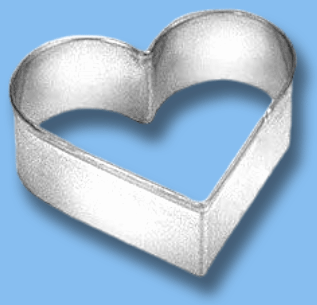
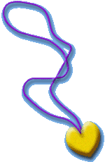

You'll
need :
1 glass of salt
3/4 glass of water
2 glasses of flour
a baking tray
a heart-shaped cookie cutter or a piece of card cut in the shape of
a heart
paint and a paintbrush, or food coloring
clear nail polish
a lenght of rope
What
to do?

Mix the flour, salt and water in to a paste that is soft and stretchy
but doesn't stick to your fingers. If it's too sticky, add some flour,
and if it's too dry, add a bit more water.
Roll out the paste. Don't forget to sprinkle some flour on your work
surface before you start, to prevent it from sticking!
Cut out the heart shape using the cutter. If you're using a heart-shaped
piece of card, place it on top of the paste and cut out the shape using
a knife.
Don't forget to make a hole at the top of the pendant, using the tip
of a knife, to thread the rope through.
Bake in the oven at 350 degrees, for 1 to 2 hours (test whether it is
cooked, by pushing your nail into the paste; if it leaves a mark, it's
not ready yet).
Leave to dry and cool naturally.
Once it is thoroughly dry, you can paint your pendant whatever color
you like and varnish it.
Thread the cord through the hole and tie a knot in it. And there you
are! With this pendant round your neck, you'll be as pretty as a picture!
You could also make pendants in the shape of a leaf or a star. Use your
imagination and make the jewel of your dreams!
|